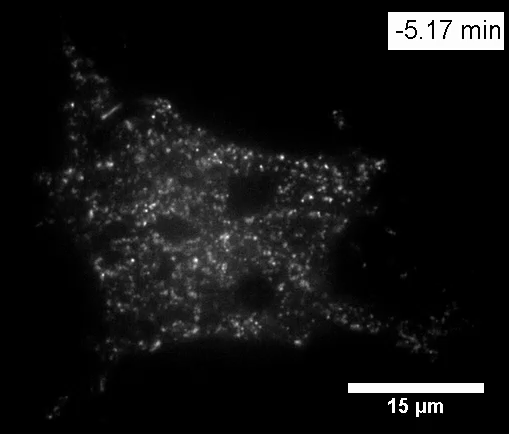
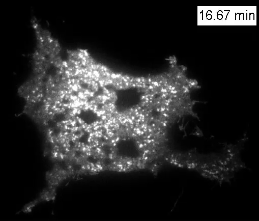
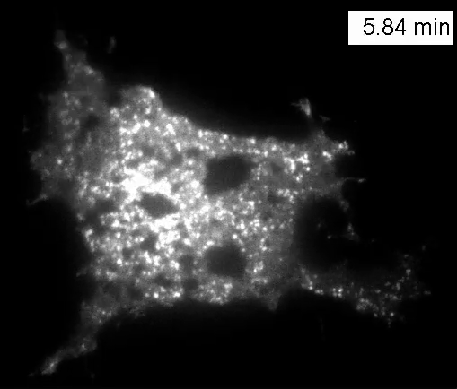

Insulin-responsive GLUT4 redistribution
Watch the surface-adjacent fluorescence change in a living cultured adipocyte before and after insulin addition. This is the original publication movie, showing a fluorescent GLUT4 reporter under TIRF illumination.


Preparation and signal. Differentiated mouse 3T3-L1 adipocyte expressing HA-GLUT4-eGFP, serum-starved before stimulation with 100 nM insulin at the embedded source clock’s 0 min. TIRF selectively excites a thin region near the coverslip-facing cell surface. White intensity is fluorescence-display contrast, not natural tissue colour.
Dawicki-McKenna, Goldman & Ostap (2012), PLOS ONE 7:e43662, Video S1, original supplement. Creative Commons Attribution, as stated in the publisher’s copyright notice; the supplied notice does not specify a licence version. Complete original 509 × 434 H.264 video stream remuxed from MOV to MP4, without re-encoding, cropping, enhancement, retiming or added labels. Original clock and scale marks retained.
Read the two clocks correctly
The source reports one acquired frame per 10 s. The file contains 132 frames at 15 fps and lasts 8.8 s: nominal 150× accelerated playback at 1×. Its embedded experimental clock runs from −5.17 min to 16.67 min relative to insulin addition. The controls show publication-file seconds; their 0.5 s steps are not individual acquisition intervals. Changing playback speed changes presentation only.
What the moving observation establishes
- Before the embedded 0 min, relatively sparse punctate fluorescence is present in the surface-adjacent TIRF field.
- Following insulin addition, the reporter signal becomes substantially brighter and more extensive in this same field. Compare the source movie and unchanged endpoint frames.
- This supports insulin-responsive GLUT4 redistribution near the cell surface in this cultured mouse system. It does not directly measure glucose uptake, reveal the transporter’s fold or resolve a membrane-fusion pore. Fluorescence depends on reporter amount, location and imaging conditions.
The receptor/signalling cascade and downstream glucose flux are separate physiological mechanisms. This movie does not show insulin carrying glucose, every bright spot fusing, or a human adipocyte response.
Unchanged source frames

Starts paused. Use native controls or the accessible playback group. Reduced-motion preference changes pause playback. Native view keeps original pixels; focus the video region and use arrow keys/Home/End to pan on a narrow screen.